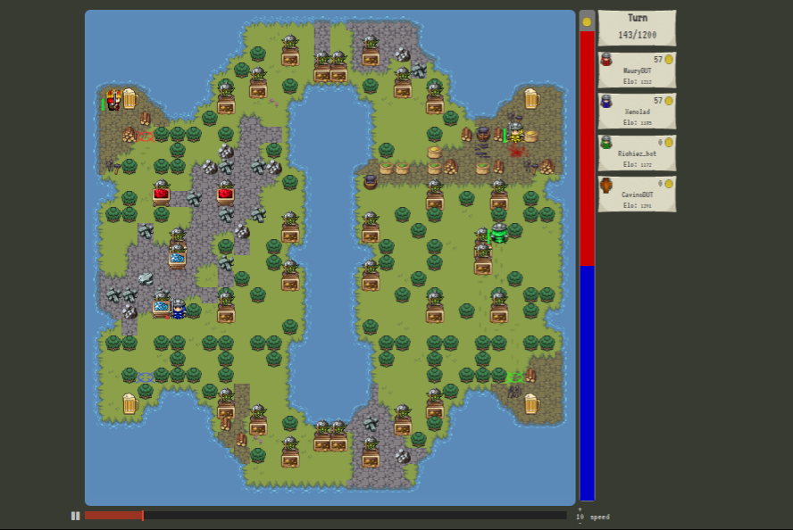

Vindinium is a game where you program robots using artificial intellegence to do things that you want them to; such as attack enemy mines and go to the taverns. Both of these things gain points and life for each robot and the robot with the most points after the time is up wins. I personally have created a bot for Vindinium and it is called MiaBot. She has won multiple games and is very successful, especially against Xenold and RichieBot. 
Setting up the vindinuim is the base of the whole bot. So it is very important that you get it right.
The first couple of steps on creating the vindinuim is setting uo your workspace. While creating your workspace.
make sure the workspace is set up in node. If it was not your bot would not function. When you have finsished
setting up your vindinuim, you have to start programming it to make your bot function the way you would like.
The reason you have to start programming it the way you like is because, the bot is already programmed to be
random. After it is in random it just goes and does what it wants randomly, and there would be a less chance of winning.
The code for creating your empty bot is:
//the var tags name variables so that you can use them later on in the code
var Bot = require('bot');
var PF = require('pathfinding');
var bot = new Bot('YOUR_KEY_HERE', 'training', 'http://vindinium.org'); //Put your bot's code here and change training to Arena when you want to fight others.
var bot = new Bot('e2g37nk9', 'training', 'http://v.summitdevclub.com:9000'); //Put your bot's code here and change training to Arena when you want to fight others.
var goDir;
var Promise = require('bluebird');
Bot.prototype.botBrain = function() {
return new Promise(function(resolve, reject) {
_this = bot;
//////* Write your bot below Here *//////
//////* Set `myDir` in the direction you want to go and then bot.goDir is set to myDir at the bottom *////////
/* *
* This Code is global data! *
* bot.bot#.mineCount */
// Set myDir to what you want and it will set bot.goDir to that direction at the end. Unless it is "none"
var myDir;
//This has the x and y variables whih shows my posititionh
var myPos = [bot.yourBot.pos.x, bot.yourBot.pos.y];
//
var enemyBots = [];
if (bot.yourBot.id != 1) enemyBots.push(bot.bot1);
if (bot.yourBot.id != 2) enemyBots.push(bot.bot2);
if (bot.yourBot.id != 3) enemyBots.push(bot.bot3);
if (bot.yourBot.id != 4) enemyBots.push(bot.bot4);
Creating the mines is a lot harder than setting up the vindinuim, this is like addind something to an empty box. The Vindinuim is the empty and ready to be programmed.To find the mines you create statements that allow the bot to go do what you allow them to do, inside a statement. For example, I want my bot to go get the mines that are open, and have not been taken from anyone else. So like in the code below I would use the code bot.freemines in order to get those mines and plug them into an if else statement along with the other statements like the taverns, and the attacking other mines. The code below will show how I plugged in the statements for the free mines and more. The code looks something like this:
if (task === "NAME#");
var X = bot.Y[0];
for (i = 0; i < X.length; i++) {
if (bot.findDistance(myPos, X) > bot.findDistance(myPos, bot.Y[i])) {
openMines = bot.Y[i];
}
console.log("SAY SOMETHING GOOD");
myDir = bot.findPath(myPos, X);
}
/* *
* This Code Decides WHAT to do *
* */
var task = "collectMines";
// The Code above will find the mines that aren't owned by anyone and claim them for ourselves. *//
/* *
* This Code Determines HOW to do it *has to be free mines
* */
// the if tasks are consistant of a couple of things, x and y. They will be filled in at certain places of the code, the x is basically a name the y variable the command
if (task === "collectMines") {
var openMines = bot.freeMines[0];
for (i = 0; i < openMines.length; i++) {
if (bot.findDistance(myPos, openMines) > bot.findDistance(myPos, bot.freeMines[i])) {
openMines = bot.freeMines[i];
}
console.log("Good Job! :) ");
myDir = bot.findPath(myPos, openMines);
if (task === "findTaverns");
var getTaverns = bot.taverns[0];
for (i = 0; i < getTaverns.length; i++) {
if (bot.findDistance(myPos, getTaverns) > bot.findDistance(myPos, bot.taverns[i])) {
openMines = bot.taverns[i];
}
console.log("Got Health");
myDir = bot.findPath(myPos, getTaverns);
}
if (task === "Find4");
var findfour = bot.bot4.id[0];
for (i = 0; i < X.length; i++) {
if (bot.findDistance(myPos, findfour) > bot.findDistance(myPos, bot.bot4.id[i])) {
openMines = bot.bot4.id[i];
}
console.log("Took it all");
myDir = bot.findPath(myPos, findfour);
}
"// The Code above will find the mines that aren't owned by anyone and claim them for ourselves. *//"
"// the if tasks are consistant of a couple of things, x and y. They will be filled in at certain places of the code, the x is basically a name the y variable
the command"